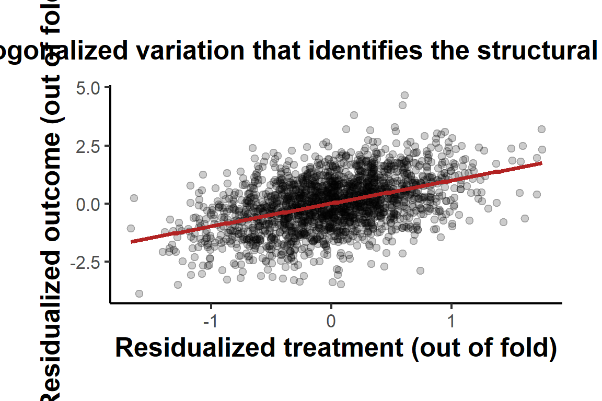

Chapter 69 Machine Learning and AI for Structural Estimation
This chapter closes the structural econometrics cluster by asking how the flexible function approximators of modern machine learning can be put in service of economic models rather than in competition with them. The chapters that precede it built structural estimators by hand: the demand systems of Chapter 60, the single-agent dynamics of Chapter 61, and the industry dynamics of Chapter 62 each rest on a tightly parameterized account of preferences, technology, and the environment. Those parameterizations buy identification and interpretability at the price of functional-form commitments that are rarely implied by theory. Machine learning offers a way to relax the commitments that do no economic work while preserving the structure that does. The unifying theme, developed throughout, is that machine learning augments economic structure rather than replacing it.
The companion chapter on machine learning for causal inference, Chapter 45, develops the double machine learning apparatus of Chernozhukov, Chetverikov, et al. (2018) for low-dimensional causal parameters in the presence of high-dimensional nuisances. This chapter takes that apparatus as understood and extends its logic from reduced-form causal targets to the parameters of fully specified economic models.
69.1 Why Combine Machine Learning with Structure
A structural model and a machine learning method answer different questions, and their division of labor is the reason they combine well. An economic model supplies two things that no purely predictive method can deliver. The first is identification: the model tells us which features of the data distribution map to the deep parameters of preferences and technology, and it does so by invoking the optimization, equilibrium, and exclusion arguments that give an estimate its economic meaning. The second is the capacity for counterfactual analysis: once the deep parameters are in hand, the model can simulate outcomes under policies, prices, or market structures that were never observed, because those parameters are by construction invariant to the intervention. Prediction alone cannot do either. A method that fits the observed conditional distribution arbitrarily well still has nothing to say about a world that differs from the one that generated the training data.
What machine learning supplies in return is flexible approximation of high-dimensional nuisance objects. Structural models are saturated with functions that the theory leaves unrestricted: the surface relating demand to a long vector of product characteristics, the value function that summarizes the discounted future of a dynamic program, the policy function that maps states to actions, the conditional choice probabilities that stand in for an unobserved value function, the distribution of unobserved heterogeneity across agents. Each of these is a high-dimensional object that the analyst has traditionally approximated with a low-order polynomial or a convenient parametric family, not because theory recommended it but because estimation demanded it. Flexible learners, lasso, random forests, gradient boosting, and neural networks, can approximate these objects without imposing arbitrary form, and they can do so in dimensions where series and kernel methods fail. The complementarity is therefore clean. The economist names the parameter that carries economic meaning and the moment conditions that identify it; the learner absorbs the nuisance functions that surround it.
The complementarity comes with risks that the rest of the chapter takes seriously. The first is overfitting the structural parameter itself. A learner flexible enough to fit a nuisance surface is flexible enough to fit noise, and if the same data are used to estimate the nuisance and to form the structural estimate, the regularization bias of the learner contaminates the parameter of interest. The second is loss of interpretability. A neural-network demand surface may predict quantities well while obscuring the elasticities that are the entire point of estimating demand, so the structural layer must be designed to surface the economic objects rather than bury them. The third is leakage, in the broad sense: information that should be held out, whether across cross-fitting folds, across time in a dynamic problem, or across the train and test split that validates a simulation estimator, can leak into the estimate and manufacture spurious precision. Athey and Imbens (2019) and Mullainathan and Spiess (2017) survey both the promise and these hazards for economics. The methods below are organized around containing them.
69.2 Machine Learning for Nuisance Components in Moment Estimators
The most direct point of contact between machine learning and structural estimation is the first stage. A great many structural estimators are defined by a moment condition, \[ \mathbb{E}\!\left[\psi(Z; \theta_0, \eta_0)\right] = 0, \] in which \(\theta_0\) is the finite-dimensional structural parameter, \(Z\) collects the data, and \(\eta_0\) is a nuisance function that must be estimated before \(\theta_0\) can be recovered. In a control-function approach \(\eta_0\) is the conditional mean of an endogenous regressor given instruments and controls; in a two-step demand or dynamic estimator \(\eta_0\) is a first-stage choice probability or expectation; in a selection model \(\eta_0\) is a propensity surface. Wherever the first stage is high-dimensional or nonlinear, a flexible learner is a natural replacement for the polynomial or parametric stage that econometric practice has used by default.
Two design principles make this replacement safe, and both are inherited directly from the double machine learning logic of Chapter 45. The first is orthogonalization. The moment function must be constructed so that its expectation is insensitive, to first order, to errors in \(\hat\eta\), which is the Neyman-orthogonality condition. When the score is orthogonal, the slow \(n^{-1/4}\) convergence rates that flexible learners attain are fast enough, because the first-order effect of nuisance error on the moment vanishes and only a second-order term of order \(\lVert\hat\eta-\eta_0\rVert^2\) survives. The second is cross-fitting. The nuisance is estimated on data disjoint from the data used to evaluate the moment, so that the overfitting of the learner does not correlate with the residual it multiplies. Without cross-fitting, a learner expressive enough to chase noise will bias the structural parameter even when the score is orthogonal.
For instrument and control selection in high dimensions the lasso plays a complementary role. When there are many candidate instruments or many candidate controls and theory does not pin down which matter, the post-selection inference machinery of Belloni et al. (2014b) uses the lasso to select the relevant terms in both the outcome and the treatment or instrument equations, then estimates the structural parameter on the union of the selected sets. Selecting on both equations rather than one is what protects the estimate against the omitted-variable bias that naive single-equation selection would reintroduce. Random forests and boosting serve the same purpose when the nuisance is a smooth but genuinely nonlinear surface rather than a sparse linear index, and the generalized random forest of Athey et al. (2019) and the causal forest of Wager and Athey (2018) extend the idea to heterogeneous structural parameters by localizing the moment condition around each covariate value.
69.2.1 A Worked Example: A Random Forest First Stage in a Moment Estimator
The following example makes the principle concrete in a setting small enough to run in a clean session and transparent enough to see exactly where the bias comes from. We study a partially linear structural relationship in which a continuous treatment or policy variable \(W\) enters linearly with the structural coefficient \(\theta_0\), while a vector of controls \(X\) confounds both \(W\) and the outcome \(Y\) through a nonlinear surface that no analyst would guess in advance: \[ Y = \theta_0\, W + g_0(X) + \varepsilon, \qquad W = m_0(X) + \nu . \] The structural parameter \(\theta_0\) is the object of interest; the surfaces \(g_0\) and \(m_0\) are nuisances. A naive estimator that controls for \(X\) with a low-order linear specification leaves a piece of the nonlinear confounding in the residual, and that residual is correlated with \(W\), so the structural coefficient is biased. A flexible first stage that learns \(g_0\) and \(m_0\) with a random forest, combined with orthogonalization and cross-fitting, residualizes both \(Y\) and \(W\) against the confounders and recovers \(\theta_0\).
We generate the data with a deliberately nonlinear confounding surface.
library(randomForest)
set.seed(46902)
n <- 2000
p <- 8
X <- matrix(runif(n * p), n, p)
colnames(X) <- paste0("X", seq_len(p))
# Nonlinear confounding surfaces for treatment and outcome
m0 <- function(X) sin(2 * pi * X[, 1]) + 0.75 * (X[, 2] - 0.5)^2 + 0.5 * X[, 3]
g0 <- function(X) cos(2 * pi * X[, 2]) + X[, 1] * X[, 3] + 0.5 * X[, 4]
theta_true <- 1.0
W <- m0(X) + rnorm(n, sd = 0.5)
Y <- theta_true * W + g0(X) + rnorm(n, sd = 1.0)
dat <- data.frame(Y = Y, W = W, X)The naive estimator partials out the confounders with a linear specification in the raw controls. Because the true confounding is nonlinear, this specification is misspecified, and the structural coefficient inherits the bias.
naive_y <- lm(Y ~ X1 + X2 + X3 + X4 + X5 + X6 + X7 + X8, data = dat)
naive_w <- lm(W ~ X1 + X2 + X3 + X4 + X5 + X6 + X7 + X8, data = dat)
ry <- resid(naive_y)
rw <- resid(naive_w)
theta_naive <- sum(rw * ry) / sum(rw * rw)The machine-learning-augmented estimator replaces the linear first stage with a random forest and estimates it out of fold, so the prediction errors used to residualize \(Y\) and \(W\) are formed on data the forest never saw. The structural coefficient is then the ratio of cross-fitted residual moments, exactly the orthogonal partialling-out estimator but with a flexible learner in place of the polynomial.
xnames <- colnames(X)
fml_y <- as.formula(paste("Y ~", paste(xnames, collapse = " + ")))
fml_w <- as.formula(paste("W ~", paste(xnames, collapse = " + ")))
K <- 5
folds <- sample(rep(1:K, length.out = n))
vY <- numeric(n)
vW <- numeric(n)
for (k in 1:K) {
tr <- folds != k
te <- folds == k
rf_y <- randomForest(fml_y, data = dat[tr, ], ntree = 300)
rf_w <- randomForest(fml_w, data = dat[tr, ], ntree = 300)
vY[te] <- dat$Y[te] - predict(rf_y, newdata = dat[te, ])
vW[te] <- dat$W[te] - predict(rf_w, newdata = dat[te, ])
}
theta_ml <- sum(vW * vY) / sum(vW * vW)
# Orthogonal-moment standard error for the cross-fitted estimator
psi <- vW * (vY - theta_ml * vW)
Jhat <- mean(vW^2)
se_ml <- sqrt(mean(psi^2) / Jhat^2 / n)The comparison collects the truth, the biased naive estimate, and the machine-learning-augmented estimate with its standard error.
results <- data.frame(
Estimator = c("Truth", "Naive linear first stage",
"ML first stage (RF, cross-fit)"),
Estimate = c(theta_true, theta_naive, theta_ml),
Std.Error = c(NA, NA, se_ml)
)
knitr::kable(
results, digits = 3,
caption = "Structural coefficient recovered by a naive parametric first stage versus a cross-fitted random-forest first stage."
)| Estimator | Estimate | Std.Error |
|---|---|---|
| Truth | 1.000 | NA |
| Naive linear first stage | 1.072 | NA |
| ML first stage (RF, cross-fit) | 0.988 | 0.045 |
The naive estimate is displaced from one because its linear controls cannot absorb the nonlinear confounding, leaving confounding variation in both residuals. The random-forest estimate, residualizing out of fold, sits close to the true value and comes with a valid orthogonal-moment standard error. The lesson generalizes well beyond this two-line moment. Any structural estimator whose identification runs through a conditional expectation or a first-stage prediction can host a flexible learner in that slot, provided the moment is orthogonalized and the nuisance is fit out of sample. A simple plot of the cross-fitted residuals confirms that the structural variation in \(W\) that identifies \(\theta_0\) survives the residualization.
library(ggplot2)
resid_df <- data.frame(vW = vW, vY = vY)
ggplot(resid_df, aes(x = vW, y = vY)) +
geom_point(alpha = 0.2) +
geom_smooth(method = "lm", se = FALSE, color = "firebrick") +
labs(
x = "Residualized treatment (out of fold)",
y = "Residualized outcome (out of fold)",
title = "Orthogonalized variation that identifies the structural coefficient"
) +
causalverse::ama_theme()
69.3 Automatic Debiasing and Locally Robust Moments
The cross-fitted estimator above relies on a single property, that the moment condition is orthogonal to the nuisance functions, so that small errors in the machine-learned first stage do not bias the structural parameter to first order. Constructing such a moment by hand requires deriving the correction term, the influence function, for each new estimand, which is the practical barrier to applying the method broadly. Two advances remove it. The general theory of locally robust, or orthogonal, moment functions shows how to add a correction to any identifying moment so that first-step estimation has no first-order effect on the target, turning ordinary GMM into orthogonal GMM for essentially any semiparametric problem (Chernozhukov, Escanciano, et al. 2022). Automatic debiased machine learning goes further and learns the correction term itself from data: the debiasing term is governed by a Riesz representer of the target functional, and rather than derive it analytically the analyst estimates it directly with any machine learner, so the entire debiased estimator, including its correction, is produced automatically (Chernozhukov, Newey, et al. 2022). The accompanying theory delivers finite-sample guarantees, consistency, Gaussian approximation, and semiparametric efficiency, under transparent conditions (Chernozhukov et al. 2023). The upshot is that the orthogonalization which makes the worked example valid is no longer a bespoke derivation but a general, automatable procedure, which is what has made debiased machine learning a default rather than a specialty.
69.4 Heterogeneous Effects and Policy Learning
A second major use of machine learning in structural work is to estimate how effects vary across units and to turn that variation into decisions, which is the empirical counterpart of the essential heterogeneity that the selection and treatment-effect chapters formalize. Causal forests estimate conditional average treatment effects with valid pointwise inference (Wager and Athey 2018), and the generalized random forest extends the idea to any quantity defined by a local moment condition, including instrumental and quantile effects (Athey et al. 2019). The orthogonalization logic of debiased machine learning carries over to the conditional effect: the R-learner casts heterogeneous-effect estimation as an orthogonal loss that is robust to nuisance error (Nie and Wager 2021), the doubly robust learner regresses a debiased pseudo-outcome on covariates (Kennedy 2023), and the meta-learner taxonomy organizes these strategies and their finite-sample tradeoffs (Künzel et al. 2019). Debiased estimation of the conditional effect itself, projected onto interpretable features and equipped with uniform confidence bands, connects the machinery to structural heterogeneity targets (Semenova and Chernozhukov 2021), and a generic procedure delivers valid inference on the key features of heterogeneity, the best linear predictor, the sorted group effects, even when the machine-learning proxies are imperfect (Chernozhukov et al. 2025). The point of estimating heterogeneity is usually to act on it, and policy learning closes the loop by choosing an assignment rule that maximizes welfare, with doubly robust value estimates and regret bounds that inherit the orthogonality of the underlying effect estimates (Athey and Wager 2021). Comprehensive treatments of the applied workflow, from nuisance estimation through group effects to individualized rules, are now available (Knaus 2022).
69.5 Deep Learning for Dynamic Models
The estimators of Chapter 61 and Chapter 62 confront a curse of dimensionality that flexible approximation is well suited to break. A dynamic program is defined by a value function \(V(s)\) over a state \(s\), and the computational burden of solving and estimating the model grows with the dimension of \(s\). When the state is a handful of discrete variables the value function can be tabulated, but realistic models with continuous states, many state variables, or rich heterogeneity quickly exhaust grid-based methods. The value function, the policy function, and the conditional choice probabilities are all high-dimensional smooth objects, and a neural network is a natural way to represent them. Recent work trains such networks to satisfy the model’s own optimality conditions directly, from the value-function and Euler-equation residuals of single-agent dynamic models to the equilibrium conditions of heterogeneous-agent economies with aggregate risk and occasionally binding constraints, as in deep equilibrium nets (Azinovic et al. 2022).
Two distinct uses arise. The first is approximation of the value or policy function within an otherwise standard estimator. A neural network parameterizes \(V_\phi(s)\) or the policy \(\sigma_\phi(s)\), and the network weights \(\phi\) are chosen so that the Bellman equation is satisfied in expectation across sampled states, replacing the exact backward induction on a grid with a projection that scales to high dimensions. The conditional choice probability inversion that powers two-step dynamic estimators is itself a first-stage nuisance, and the random-forest logic of the previous section applies to it directly: a flexible learner estimates the choice probabilities, and the structural cost or profit parameters are recovered from a moment condition that is orthogonalized against first-stage error.
The second use is more ambitious. Deep reinforcement learning treats the agent’s problem as one of learning a policy by repeated interaction with a simulated environment, and the same algorithms that solve high-dimensional control problems in engineering can solve the dynamic discrete-choice and dynamic-game problems of empirical industrial organization. The appeal is that reinforcement learning does not require the analyst to discretize the state or to enumerate the equilibrium, which is exactly the bottleneck in dynamic games where the equilibrium correspondence is itself the object that is hard to compute. The cost is that the equilibrium discipline that gives a dynamic game its empirical content must be imposed on the learning algorithm rather than assumed away, and verifying that a learned policy is an equilibrium rather than merely a good response is a live methodological question. The econometric theory for neural approximation in these settings is supplied by Farrell et al. (2021), who establish convergence rates and valid inference for deep neural network estimators of nonparametric components, which is what licenses their use inside a structural moment condition.
The illustration below sketches the architecture of a neural value-function approximation. It is marked eval=FALSE because it depends on a deep-learning back end that is outside the confirmed package set, and it is included to show the shape of the construction rather than to run.
# Illustrative neural value-function approximation (requires keras/torch).
# A network V_phi(s) is trained so the Bellman residual is small in
# expectation across sampled states, replacing grid-based backward induction.
library(keras)
state_dim <- 12L
value_net <- keras_model_sequential() |>
layer_dense(units = 64, activation = "relu",
input_shape = state_dim) |>
layer_dense(units = 64, activation = "relu") |>
layer_dense(units = 1)
# Bellman-residual loss: V_phi(s) should equal the per-period payoff plus
# the discounted expected continuation value at sampled next states.
bellman_loss <- function(states, payoffs, next_states, beta) {
v_now <- value_net(states)
v_next <- value_net(next_states)
target <- payoffs + beta * v_next
tf$reduce_mean((v_now - target)^2)
}
# Structural cost or profit parameters are then recovered from a moment
# condition that uses the trained continuation values as a first-stage
# nuisance, orthogonalized against approximation error.69.6 Machine Learning in Demand Estimation
Demand estimation, the subject of Chapter 60, is a natural home for flexible methods because its central nuisance objects are high-dimensional and its central parameters are sharply economic. The random-coefficients logit model of Berry, Levinsohn, and Pakes places a parametric distribution, usually a normal, on the heterogeneity of consumer tastes for product characteristics. That distributional assumption is a convenience, not a theoretical requirement, and machine learning relaxes it in two directions. One can replace the normal mixing distribution with a flexible nonparametric distribution estimated from the data, letting the shape of taste heterogeneity be determined by the variation in choices rather than imposed in advance. One can also replace the linear-in-characteristics utility index with a neural network, so that the way characteristics combine into utility is learned rather than specified, which matters when products are described by many attributes whose interactions are unknown. An early benchmarking exercise showed that machine-learning predictors and their ensembles can substantially improve the out-of-sample fit of demand models on high-dimensional scanner data, while underscoring the lesson that predictive accuracy is not the same as the structural elasticities a counterfactual requires (Bajari et al. 2015).
A second contribution is automatic instrument construction. Identification of the random-coefficients model rests on instruments for price, and the traditional instruments, functions of the characteristics of competing products, are constructed by hand from a menu of candidate transformations. A flexible learner can construct the optimal instrument as a prediction problem, learning the function of exogenous characteristics most correlated with the endogenous price, which both improves efficiency and removes the discretion that hand-built instruments invite. The construction must respect the exclusion restriction and must be cross-fit so that the instrument is not fit to the same residual it instruments, the same orthogonalization and sample-splitting discipline that governs every other first stage in this chapter.
69.7 Simulation-Based and Adversarial Estimation
A structural model is a mapping from parameters to data distributions, and many models are easy to simulate from but hard to write a likelihood for. Simulation-based estimation exploits the easy direction: it chooses parameters so that data simulated from the model resemble the observed data along chosen dimensions. Machine learning enters by learning the comparison itself. Rather than fixing in advance a set of summary moments that the analyst hopes are informative, a neural network can learn the mapping from data to parameters, or learn the discrepancy between simulated and observed data that the estimator should minimize. The broader landscape of these neural likelihood-free methods, including neural posterior, likelihood, and density-ratio estimation, is surveyed by Cranmer et al. (2020).
The adversarial formulation of Kaji et al. (2023) makes this precise and is the most developed instance. The estimator is posed as a game between a generator, which is the structural model simulating data at a candidate parameter, and a discriminator, which is a flexible classifier, often a neural network, trying to tell simulated data from real data. When the discriminator can distinguish the two, the parameter is wrong and is adjusted to fool the discriminator; the parameter that leaves the best possible discriminator unable to do better than chance is the estimate. The discriminator learns the most informative dimensions of discrepancy automatically, so the analyst is relieved of choosing summary statistics, and the procedure inherits asymptotic guarantees under conditions that Kaji et al. (2023) characterize. The appeal is generality, since any model that can be simulated can be estimated this way, and the caution is that the adversarial objective is nonconvex and the learned discriminator must be regularized so that it captures genuine economic discrepancy rather than sampling noise. This is the same leakage concern, now in the guise of an over-powerful discriminator, that recurs whenever a flexible learner sits next to a structural parameter.
69.8 Artificial Intelligence as Measurement and as Structural Estimation
Two further roles for modern artificial intelligence in structural work are worth naming, both useful and both demanding caution. The first is measurement. Large language models and related tools can construct structural inputs that were previously hard to observe: text-based measures of expectations, sentiment, or beliefs from corpora of disclosures and news, as in the text-as-data tradition surveyed by Gentzkow et al. (2019), or elicited preferences and expectations that feed a model’s primitives. The rapid arrival of generative large language models extends this measurement role across the research workflow, with the opportunities and the pitfalls catalogued by Korinek (2023). The promise is that variables central to a structural model, expectations in a dynamic problem, preferences in a demand system, can be measured rather than assumed. The discipline is validation. A model-generated measure carries its own measurement error and its own biases, and treating it as a clean observation imports those errors into the structural estimate. Any such input must be validated against external benchmarks and its measurement error must be propagated through the estimator, exactly as one would treat any noisy proxy.
The second role reframes the entire enterprise. Igami (2020) observes that the most celebrated artificial-intelligence systems, the engines that learned to play board games and video games at superhuman level, are themselves solving dynamic programming and dynamic-game problems of precisely the kind that structural econometrics studies, and that the methods of structural estimation can be read as estimating the parameters of an agent whose behavior an artificial-intelligence system would generate. The mapping clarifies what is shared and what is distinct. What is shared is the dynamic optimization and the equilibrium computation. What is distinct, and what no amount of computational power supplies, is identification from observational data and the economic interpretation of the recovered parameters. This is the principle the chapter has pressed throughout, now stated at its most general. Machine learning and artificial intelligence supply approximation, computation, and measurement of formidable power, but the identifying assumptions, the counterfactual logic, and the economic meaning remain the contribution of the structural model. The two are complements, and the productive frontier lies in combining them rather than in choosing between them.